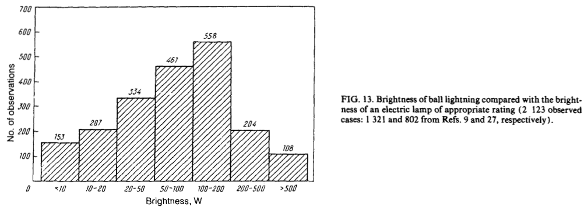
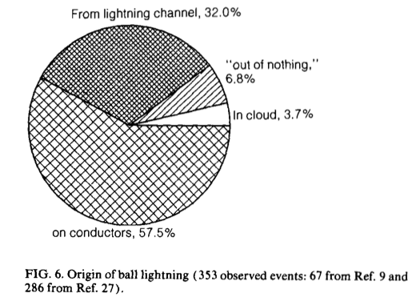
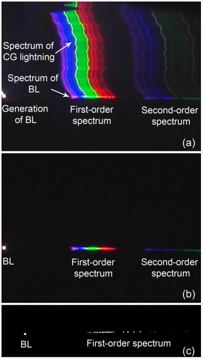

�状闪电：�百年的“幽��
已�在媒体�表，请勿转载。
é›·ç”µäº¤åŠ çš„é›¨å¤œï¼Œä¸€ä¸ªç�ƒçŠ¶çš„å¹½ç�µçš„在å�Šç©ºé£˜è�¡ï¼Œå®ƒå¼€å§‹æ¼«æ— 目的éš�机游走，å��æ�¥ä¼¼ä¹�对附近的人产生了兴趣。å��å‡ ç§’è¿‡å�»ä¹‹å��，这个闪ç�€æ©™è‰²å…‰èŠ’çš„å¹½ç�µä¾¿æ¶ˆå¤±ä¸�è§�了。
早在 1596 年，就曾ç»�有一起出ç�°åœ¨è‹±æ ¼å…°è�¨é»˜å¡�特郡的韦尔斯的一起ç�ƒçŠ¶é—ªç”µäº‹ä»¶çš„记录。1 å‡ ç™¾å¹´æ�¥ï¼Œè™½ç„¶æœ‰ç�€ä¼—多的ç�ƒçŠ¶é—ªç”µç›®å‡»è®°å½•ï¼Œäººä»¬å�´ä¸€ç›´æ²¡æœ‰æ�开这个幽ç�µçš„é�¢çº±ã€‚

（图片��：Ball Lightning from Wikimedia Commons）
在更早的北宋时期，沈括在《梦溪笔谈》ä¸è®°è½½äº†ä¸€æ¬¡é��常类似ç�ƒçŠ¶é—ªç”µçš„过程：雷ç�«ä»�窗å�里é�¢ç©¿è¿‡æ�¥ï¼Œæš´é›·è¿‡å��，木制物å“�å¹¶æ— æ�Ÿå��，但是银饰å�´è��化了。2
目击记录
在一篇上世纪å…å��å¹´ä»£çš„æ–‡ç« ä¸ï¼Œæ��到了 Brand 收集处ç�†çš„å…³äº�ç�ƒçŠ¶é—ªç”µçš„报告，Brand 相信他所统计调查的 600 项事件ä¸ï¼Œå�ªæœ‰ 215 项还算是å�¯ä¿¡ã€‚å�¦å¤–ï¼Œæ–‡ç« è¿˜æ��到了对ç¾�å›½æ©¡æ ‘å²å›½å®¶å®�验室的一项比较åˆ�级的问å�·è°ƒæŸ¥ï¼Œ1962 个被调查的人ä¸ï¼Œæœ‰ 110 个人说自己看到过ç�ƒçŠ¶é—ªç”µï¼Œæ¯”例高达 5.6%。虽然å��æ�¥å¯¹æ‰€æœ‰çš„ Union Carbide Nuclear Company 的所有人员的调查ä¸ï¼Œå�ªæœ‰ 3.1% 的人说è§�过ç�ƒçŠ¶é—ªç”µï¼Œä½†æ˜¯è¿™ä¾�然å�¯ä»¥è¯´æ˜�，ç�ƒçŠ¶é—ªç”µçš„目击者并ä¸�稀有。3也就是说，ç�ƒçŠ¶é—ªç”µåœ¨æŸ�些时间段æŸ�些地区，算ä¸�上是一个é��常罕è§�çš„ç�°è±¡ã€‚
大家对ç�ƒçŠ¶é—ªç”µçš„æ��述，ä»�è¿�动到形æ€�，甚至消失的方å¼�常常有很大的差异。Smirnov 在一篇论文ä¸ï¼Œæ ¹æ�®å½“时大家收集的观测数æ�®æ€»ç»“了ç�ƒçŠ¶é—ªç”µçš„一些特å¾�。
亮度：大约一� 100W 的�。

颜色：黄色，橙色，红色（粉色）和白色居多。

消失的方�：多数是以爆炸的形�消失的。

直径：主�在 10cm 到 50cm 之间。

寿命：大多�� 50 秒。

出�的地方：多数在导体附近。

出ç�°çš„å£èŠ‚：多出ç�°åœ¨ä¸ƒæœˆã€‚（å£èŠ‚和时间的统计结æ�œè¿˜å�—åˆ°æ ·æœ¬çš„æ°”å€™å’Œäººç¾¤çš„ä½œæ�¯çš„å½±å“�。）

出ç�°åœ¨ä¸€å¤©ä¸çš„时段：9 点到 18 点之间。（å£èŠ‚和时间的统计结æ�œè¿˜å�—åˆ°æ ·æœ¬çš„æ°”å€™å’Œäººç¾¤çš„ä½œæ�¯çš„å½±å“�。）

（å��两项比较容易ç�†è§£ï¼Œç»Ÿè®¡çš„æ ·æœ¬å¤§å¤šæ˜¯åŒ—å�Šç�ƒï¼ˆäººç±»å¤§å¤šè�šé›†åœ¨åŒ—å�Šç�ƒï¼Œä¿„罗斯对äº�ç�ƒçŠ¶é—ªç”µçš„å…³æ³¨å’Œç ”ç©¶å�ˆè¾ƒå¤šï¼‰ï¼Œæ™šä¸Šå¤§å®¶éƒ½ç�¡è§‰äº†ï¼Œå‡ºç�°äº†ä¹Ÿä¸�太容易被人å�‘ç�°ã€‚）
ç�†è®ºç ”究
å…³äº�ç�ƒçŠ¶é—ªç”µçš„ç�†è®ºæœ‰å¾ˆå¤šï¼Œå…¶ä¸æœ‰ä¸€ä¸ªç�†è®ºæ˜¯ cloud-to-ground 闪电击ä¸åœŸå£¤ï¼Œå�‘生化å¦å��应，使得土壤ä¸çš„ç¡…å…ƒç´ è¢«é‡Šæ”¾å‡ºæ�¥ï¼Œå¹¶åœ¨ç©ºæ°”ä¸å½¢æˆ�一个漂浮ç�€ Si，SiO，SiC 的纳米颗粒的区域，这些颗粒以化å¦èƒ½çš„å½¢å¼�储å˜äº†ä¹‹å‰�闪电的部分能é‡�。之å��这些颗粒é€�æ¸�氧化，把储å˜çš„闪电能é‡�释放出æ�¥ï¼Œä¾¿å½¢æˆ�了一个å�‘å…‰å�‘çƒçš„ç�ƒçŠ¶é—ªç”µã€‚4è¿™æ ·å�¯ä»¥è§£é‡Šå¤§å¤šæ•°çš„ç�ƒçŠ¶é—ªç”µçš„特性，包括寿命，亮度，产生的地点。
å½“ç„¶å› ä¸ºç¼ºä¹�ç›´æ�¥è¯¦ç»†çš„测é‡�，å�„ç§�ç�†è®ºå±‚出ä¸�穷。比如 Muldrew 有个分层模å�‹5，

（Muldrew 分层的模�）
这个模å�‹ä¸ï¼Œç�ƒçŠ¶é—ªç”µæ˜¯ç”±ä¸€ä¸ªå›ºæ€�çš„æ ¸å¤–åŠ ç”µå�层和ç‰ç¦»å�层组æˆ�的。这个ç�ƒä½“之所以ä¸�会立刻å��ç¼©æ˜¯å› ä¸ºæ ¸å¿ƒå’Œç”µå�组æˆ�的薄层之间有特殊的电ç£�场形æˆ�了一层势å�’。当电å�慢慢穿过电ç£�场势å�’æˆ–è€…æ ¸å¿ƒæ…¢æ…¢ç ´å��之å��，ç�ƒçŠ¶é—ªç”µå°±æ…¢æ…¢æ¶ˆå¤±äº†ã€‚
有些模å�‹ä¸ç”šè‡³ä½¿ç”¨äº†é»‘æ´�6。
总之，å�„ç§�å�„æ ·çš„æ¨¡å�‹å¾ˆå¤šï¼Œå�¯æ˜¯è¿™äº‹å„¿ä¸�能就å�•å‡ä¸€äº›ç›®å‡»è€…æ•°æ�®æ�¥å®šè®ºå�§ã€‚
观测
有很多想è¦�æ‹�æ‘„ç�ƒçŠ¶é—ªç”µçš„科å¦é¡¹ç›®ï¼Œä½†æ˜¯è¿™äº›é¡¹ç›®åˆ°ç›®å‰�大都还没有æ‹�到7。ä¸�过在 2012 年，æ�¥è‡ªå…°å·�西北师范大å¦çš„岑建勇，è¢�è��，薛æ€�æ•�在一次常规闪电观测（é�’è—�高å�Ÿï¼Ÿå�Ÿæ–‡ Qinghai Plateau，ä¸�知如何翻译）ä¸æ‹�到了ç�ƒçŠ¶é—ªç”µçš„高速录åƒ�和光谱。
2012 å¹´ 7 月 23 æ—¥ 21:54:59，他们是在进行 cloud-to-ground 闪电观测的时候，ç�ƒçŠ¶é—ªç”µçª�然出ç�°ã€‚他们的仪器æ‹�下了整个过程，包括视频，声音和 82 å¼ å›¾åƒ�。整个ç�ƒçŠ¶é—ªç”µå�‘光的时间是 1.64 秒。下é�¢æ˜¯ä»–们æ‹�到的影åƒ�和光谱：
ç�ƒçŠ¶é—ªç”µäº§ç”Ÿçš„时候的光谱å�¯ä»¥åœ¨ä¸‹é�¢å›¾ç‰‡ä¸çœ‹åˆ°ã€‚上图是æ‹�åˆ°çš„ç¬¬ä¸€å¼ å›¾ç‰‡ï¼Œä¸é—´çš„å›¾æ˜¯ç¬¬äºŒå¼ ã€‚å�¯ä»¥æ˜�显的看到ç�ƒçŠ¶é—ªç”µçš„ 光谱和常规的 cloud-to-ground 闪电是ä¸�å�Œçš„。

（图片��:Observation of the Optical and Spectral Characteristics of Ball Lightning8）
他们ç»�过分æ��，å�‘ç�° Si I, Fe I, å’Œ Ca I 的谱线在整个ç�ƒçŠ¶é—ªç”µè¿‡ç¨‹ä¸éƒ½å˜åœ¨ã€‚å…¶ä¸ï¼ŒSi I 的谱线甚至一直到最å��的阶段也有。å�¦å¤– N I å’Œ O I 近红外谱线先å��出ç�°ï¼Œå¹¶ä¸”在ç�ƒçŠ¶é—ªç”µçš„亮度达到最大的时候强度达到最大，之å��便é€�æ¸�å‡�弱并且以ä¸�出ç�°çš„顺åº�相å��的次åº�消失。9
总之，ç�ƒçŠ¶é—ªç”µä¸å�«æœ‰ Si，Fe，Ca ç‰å…ƒç´ ï¼Œè¿™äº›å…ƒç´ æ£å¥½æ˜¯åœŸå£¤ä¸æ‰€å¤§é‡�å�«æœ‰çš„10ã€‚å› æ¤è¿™ä¸ªè§‚测在一定程度上支æŒ�æŸ�些类å�‹çš„ç�ƒçŠ¶é—ªç”µè·ŸåœŸå£¤æœ‰å…³çš„ç�†è®ºï¼Œä½†æ˜¯éœ€è¦�更多的观测和å®�验验è¯�。
应用
龟�派�气�功�

�考
- Ball Lightning on Wikipedia ↩
- 「内ä¾�æ��èˆœä¸¾å®¶æ›¾ä¸ºæš´é›·æ‰€éœ‡ã€‚å…¶å ‚ä¹‹è¥¿å®¤ï¼Œé›·ç�«è‡ªçª—间出，赫然出æª�ï¼Œäººä»¥ä¸ºå ‚å±‹å·²ç„šï¼Œçš†å‡ºé�¿ä¹‹ã€‚å�Šé›·æ¢ï¼Œå…¶èˆ�宛然，墙å£�çª—çº¸çš†é»”ã€‚æœ‰ä¸€æœ¨æ ¼ï¼Œå…¶ä¸æ�‚è´®è¯¸å™¨ï¼Œå…¶æ¼†å™¨é“¶é¥«è€…ï¼Œé“¶æ‚‰æ§ æµ�在地，漆器曾ä¸�焦ç�¼ã€‚有一å®�刀，æ��å�šé’¢ï¼Œå°±åˆ€å®¤ä¸æ§ 为æ±�，而室亦俨然。人必谓ç�«å½“先焚è�‰æœ¨ï¼Œç„¶å��æµ�金石，今乃金石皆铄，而è�‰æœ¨æ— 一æ¯�者，é��人情所测也。佛书言“龙ç�«å¾—水而炽，人ç�«å¾—水而ç�¾â€�，æ¤ç�†ä¿¡ç„¶ã€‚人但知人境ä¸äº‹è€³ï¼Œäººå¢ƒä¹‹å¤–，事有何é™�？欲以区区世智情识，穷测至ç�†ï¼Œä¸�其难哉ï¼�ã€� ↩
- J. R. McNally. (1960). Preliminary Report on Ball Lightning. Proceedings of the Second Annual Meeting of the Division of Plasma Physics of the American Physical Society, Gatlinburg, No. 2AD5 [1960], Paper J-15, pp. 1AD25 ↩
- John Abrahamson and James Dinniss. (2000). Ball lightning caused by oxidation of nanoparticle networks from normal lightning strikes on soil. Nature 403, 519-521. doi:10.1038/35000525 . ↩
- D. B. Muldrew. (2010). Solid charged-core model of ball lightning. Ann. Geophys., 28, 223-232. doi:10.5194/angeo-28-223-2010 . ↩
- Mario Rabinowitz. (1999). Little Black Holes: Dark Matter and Ball Lightning. Astrophys.Space Sci. 262, 391-410. doi:10.1023/A:1001865715833 . arXiv:astro-ph/0212251 . ↩
- 我没有找到官方的项目网站，这个结论是ä»�这里看到的。 ↩
- Jianyong Cen, Ping Yuan, and Simin Xue. (2014). Observation of the Optical and Spectral Characteristics of Ball Lightning. Phys. Rev. Lett. 112, 035001. doi:10.1103/PhysRevLett.112.035001 . ↩
- I 表示离å�çš„ä»·æ€�。 ↩
- 地ç�ƒçš„åœ°å£³å…ƒç´ ä¸°åº¦åˆ—è¡¨ ↩

{kind=link}
å‰�阵å�巴西还是哪儿ä¸�是å�ˆç»™åŠˆäº†, æ»äº†å¥½äº›äººå“©
看æ�¥å�šæ¦å™¨è¿˜æ˜¯æœ‰ç‚¹æ½œåŠ›å“ˆã€‚怪ä¸�å¾—å�‘ç�°å¥½å¤šè®ºæ–‡éƒ½æ˜¯å‰�è‹�è�”的，è�«é��他们就曾ç»�æƒ³é€ æ¦å™¨ï¼Ÿ
那个翻译为“�海高��。就这么简�
多谢多谢。